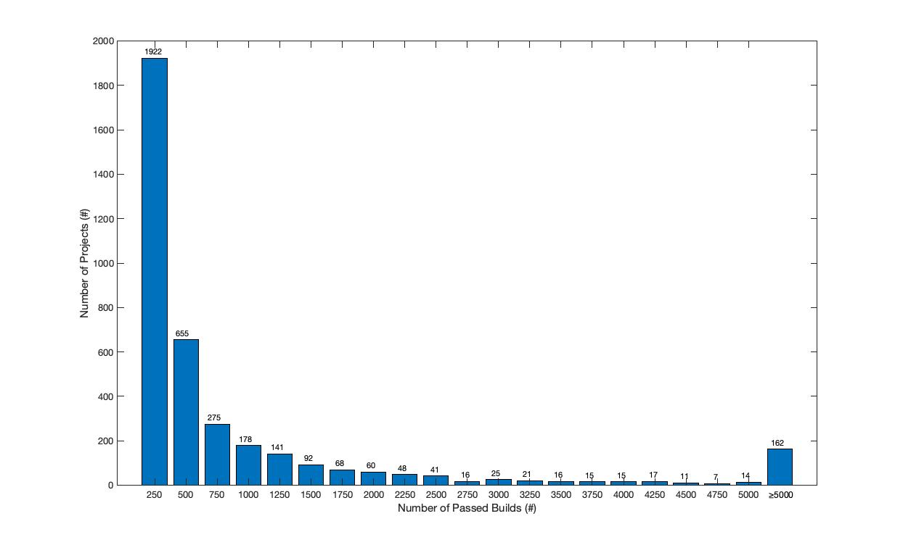
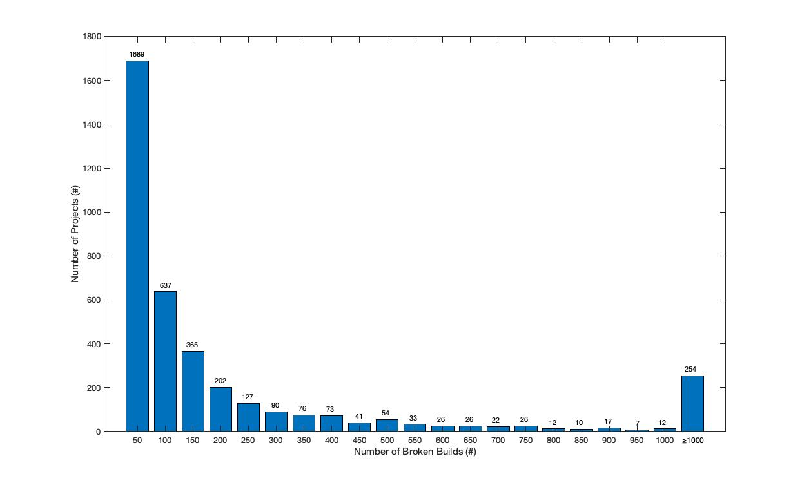

We analyzed the distribution of the number of total builds, passed builds and broken builds, 
as respectively shown in the following three figures.
We will add these distributions in the paper. <br>

<br>
<br>


